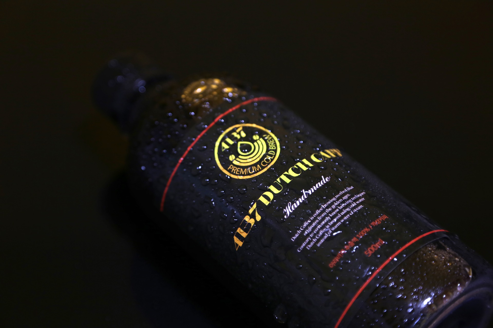

개요
일반적으로 커피는 뜨거운 물을 분쇄한 원두에 부어서 단시간에 커피액을 추출하는 반면, 콜드브루는 이름 그대로 차가운 물에 커피를 우린다. 앞선 커피들과 제조방법이 다르다. 이때 찬물은 잘 우러나지 않기 때문에 물을 한두방울씩 떨어뜨려서 8시간 정도 걸려 만든다. 그 때문인지 '천사의 눈물'이라는 별명도 있다고 한다. 고온, 고압의 물을 아주 곱게 분쇄한 원두에 적용해 초단시간에 원액을 추출하는 에스프레소와 대척점에 있다.
마시는 방법
찬물에서 우린 커피라 연할 것 같지만 상당히 진하다. 묽게 제조한 경우도 물과 원두의 비율을 10:1 정도로 내리는데, 이는 통상 커피보다 한결 진한 비율이다. 사실 이 정도 농도로는 블랙커피 이외의 바리에이션으로 쓰기 어렵고, 보통 1:5의 비율로 더 진하게 만들어야 좋다.
인터넷에서 파는 원액같은 경우 원두:물을 1:2까지 한 진액에 가까운 물건도 나온다. 실제로 잘 내린 더치 커피나 콜드부류의 결과물은 아주 진하고 원두 향이 살아 있는 원액스러운 느낌이라는 점을 염두에 두자. 때문에 보통 물, 우유 등으로 희석해서 마시곤 한다. 드물게 스트레이트로 마시는 매니아들도 당연히 있다. 에스프레소나 터키 커피 정도로 극악한 진한 맛은 아니지만, 볶은 원두의 각종 개성있는 향이 열에 의해 변질되지 않은 채 생생하게 살아 있기 때문에 강렬함은 뒤지지 않는 편이다.
